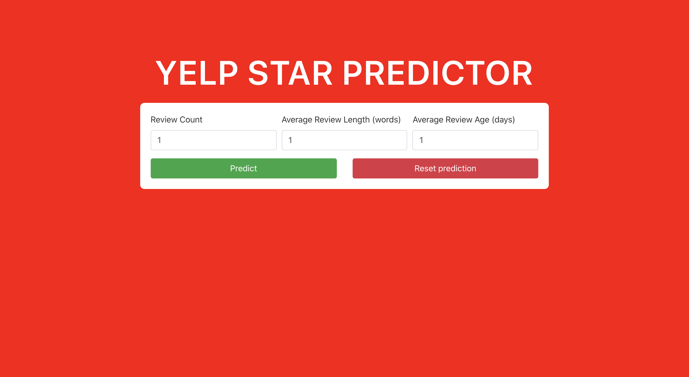

Yelp Machine Learning Web Application

Role: Developer
Team: Solo
Timeline: April 2020 - June 2020
Technologies: Flask, React, Scikit-learn, Docker, Flask-RESTPLUS, Pandas, Numpy, Bootstrap
About:
Yelpify is a machine learning web application built with a react frontend and a flask backend. I made use of a
linear regression model to accurately predict a restaurant's "yelp rating" based off of user input including
review count, average review length, and average review age. After completing the application, I dockerized
the application by creating two Dockerfiles to create images for the frontend and backend, which would then
be served using Docker Compose. More can be found out here, https://github.com/JonathanWong592/ML-Docker
Tasks:
1) I created a linear regression model to predict Yelp ratings based off of data provided by Codecademy including business, photo,
review, and user data. The model had a score of 83% based off of the features I tested with, which includes review count, average
review length, and average review age. I saved the model to disk using joblib and is able to process input from the user accessing
the frontend, and output a result.
2) I used docker to package my application making it easier for myself and other developers to deploy it
without a problem. I created two docker images, one for the React frontend, and the other for the flask backend.
Both images were simulatenously launched by a docker compose file which hleped streamline the deployment process.
3) The application is built off of an open source react and flask template paving the way for a more explicit implementation of my app.
I was able to clearly visualize the workings of how React and Flask communicated with eachother and send data back and forth with
the use of Flask-RESTPLUS. Knowing this, I modified the template to my liking and personzlied the apperance with a more Yelp app vibe.